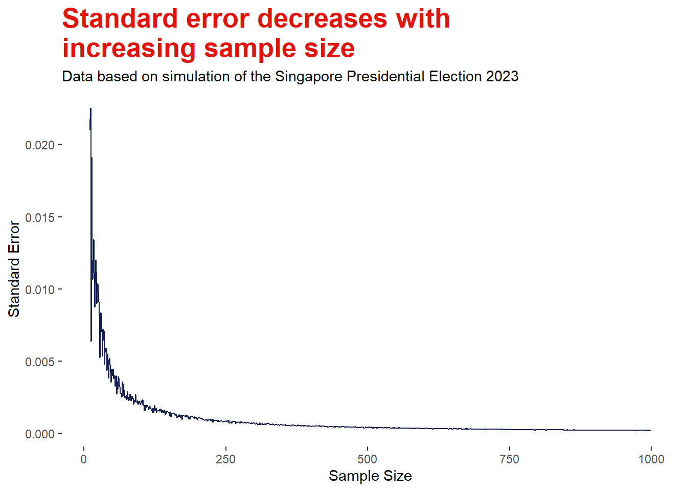

Singapore Presidential Election 2023: How Good Sampling can make Good Inference about the Population
This post presents the strength of randomised sampling to make inferences about the population as exemplified in the recent Singapore Presidential Election 2023.
Statistics
Author
Nien Xiang Tou
Published
September 8, 2023
Sample count results were first publicly released in a presidential election during the recent Singapore Presidential Election 2023. Such approximation of polling results was computed by summing up random samples of 100 ballot papers each from every polling station with weightage adjustment according to the vote count at each polling station. Interestingly, the sample count results turned out to be very close to the actual election results. This is an excellent example of how good sampling methods can help us make accurate inferences about the population. This blog post shows how we can use sample data to estimate parameters of the population through a simulation of the Singapore Presidential Election 2023.
Stock image of polling. Source: Element5 Digital,pexels.com
Why Sampling is Needed?
The aim of research is often to find results that can be generalised to a population of people or things. However, it is likely impractical and not feasible to access every member of the population in most contexts. Thus, researchers have to employ more feasible solutions such as collecting data from a subset of the population of interest and make inferences about the population as a whole. Such subset is termed a sample, and the process of choosing this subset is the sampling method. For example, if we are interested to find out what is the height of adolescent boys in Singapore, it is impossible to measure the heights of everybody. Instead, we can gather a smaller group of adolescent boys and make an estimate based on their heights. Arguably, sample values may not correspond to the true population values but the bigger the sample, the more likely it is to reflect the whole population.
Let’s examine how close a sample can approximate the true population value through a simulation example of the Singapore Presidential Election 2023.
Simulation of the Singapore Presidential Election 2023
According to the official results, there was a total of 2,480,760 accepted votes. First, I created a data frame with the total respective votes of each candidate as indicated by their initials. The prop.table function helps us to verify that our data is correct.
# Creating a data frame based on actual polling results votes <-data.frame(sample =c(rep("TS", 1746427), rep("NKS", 390041), rep("TKL", 344292)))# Examining the proportion of votes from each candidateprop.table(table(votes$sample))
NKS TKL TS
0.1572264 0.1387849 0.7039887
Is One Sample Sufficient?
First, let’s try to estimate the population proportion based on one sample of 100 votes. Interesting, the proportion is the same as the sample count results reported, and it is super close to the actual results as well.
# Set seed for reproducibilityset.seed(1234)# Random sample of 100 votessample_1 <-sample(votes$sample, 100)# Proportion of votes based on sampleprop.table(table(sample_1))
sample_1
NKS TKL TS
0.14 0.16 0.70
Given that there was over 2 million votes in total, estimating results based on a mere sample of 100 votes is arguably unconvincing. This is a fair critique since sample estimates are very likely to differ from the true population value and different samples would probably vary among one another. We can quantify this uncertainty or variance by calculating the standard error and the confidence intervals.
The standard error is the standard deviation of sample means, and is a measure of the sample’s representativeness of the population. A small standard error would mean that the sample estimate is close to the population value and vice-versa. As shown in the formula above, this is calculated based on the sample proportion, p, and the sample size, n. The confidence intervals represent the range of plausible values that the true population proportion would fall, and this is computed using the required z-score and the computed standard error. A z-score of 1.96 corresponds to a 95% confidence interval.
# Saving the sample proportions into a dataframeprop_1<-data.frame(prop.table(table(sample_1)))# Proportion of votes for Tharman Shanmugaratnamprop_TS <- prop_1[prop_1=="TS",]$Freq# Calculating the standard error(prop_TS*(1-prop_TS))/100
The code above computes the standard error for candidate Tharman Shanmugaratnam using the same formula. The output indicates that the standard error of 0.21% is relatively small, which suggests that the sample is reasonably representative of the actual population. In addition, the 95% confidence intervals show that the population proportion would fall between 69.6% and 70.4%. In fact, the upper boundary value is the true population value. This demonstrates the beauty of statistical inference, in which a small representative sample can help us make quite accurate inference of the true value of a population 25,000 times bigger.
Does Sample Size Matter?
# Set seed for reproducibilityset.seed(1234)# Random sample of 126400 votessample_all_polling_stn <-sample(votes$sample, 126400)# Proportion of votes based on sampleprop.table(table(sample_all_polling_stn))
# # Saving the sample proportions into a dataframeprop_1<-data.frame(prop.table(table(sample_all_polling_stn)))# Proportion of votes for Tharman Shanmugaratnamprop_TS <- prop_1[prop_1=="TS",]$Freq# Calculating the standard error(prop_TS*(1-prop_TS))/126400
[1] 1.653127e-06
In the Singapore Presidential Election 2023, sample counts were collated based on 100 votes randomly picked from each of the 1,264 polling stations. Thus, a total of 126,400 votes were sampled to determine the sample count results. The first code output above shows that a random sample of such sample size is found to give similar estimates as our single sample results above. While the proportion estimates are similar, the standard error for the bigger sample size is over 1000 times smaller as shown in the second code output above. This indicates that the uncertainty of the estimate is smaller as compared to the estimate based on just 100 votes. Consequently, the narrower confidence intervals increase our assurance of the estimate from the bigger sample size.
Code
# Set seed for reproducibilityset.seed(1234)# Create an empty list to record values from the for-loopsample_list <-list()# For loop to calculate the standard errors based on sample size ranging from 10 to 1000for (i in10:1000){ sample_i <-sample(votes$sample, i) prop_i<-data.frame(prop.table(table(sample_i))) prop_TS <- prop_i[prop_i=="TS",]$Freq se_i <- (prop_TS*(1-prop_TS))/i sample_list <-append(sample_list, se_i)}# Insert list into a data framedf_sample <-data.frame(sample_n =seq(10,1000))df_sample$se <- sample_listdf_sample$se <-as.numeric(df_sample$se)

Logically, larger sample sizes reduce the margin of error and increase our confidence of the estimate. The visualisation above illustrates such relationship between the standard error and sample size based on simulating different sample sizes ranging from 10 to 1000 (please unfold the code above to see the for-loop employed for the simulation). We can observe from the visualisation that the decrease in standard error is more distinct at smaller sample sizes as compared to larger sample sizes. This indicates that beyond a certain threshold, increasing the sample size may return negligible reduction of the error margins. For example, doubling the sample size from 500 to 1000 votes would only reduce the uncertainty of the estimate by 0.02%. While better estimates are definitely ideal, larger sample size often require more efforts and resources as well. Thus, this highlights the importance of the trade-off between the expected benefits and the efforts required.
Representativeness is Key
The first example above shows how a single sample of 100 votes can give an estimate that is so close to the true population value. The relatively small standard error indicates that the sample is reasonably representative of the population. This is achieved due to the random sampling method employed in the simulation, in which each of the over 2 million votes has a chance to be sampled. However, this is a tall order to achieve realistically.
If we go on the streets and sample 100 individuals on their preferences of who they are voting for, we are likely to get an estimate with a much larger margin of error as compared to the example above. This is because our sampling methods are likely confounded by various factors such as age-group, location of neighbourhood and political inclinations that can significantly influence the voting decision. We may strategise our sampling methods such as stratification to try and overcome some of these confounders but it is not feasible to adjust for every one of them. In some cases, we may not perfectly know what are the confounders to adjust for. However, this issue can be overcome simply through random sampling because the act of randomisation removes any confounding relationships between our sample and their voting decisions. For example, we may label every person with a number ID within a representative pool of individuals and determine who to sample via a random number generator. The chance of getting sampled is only determined by the random number sequence, and this could not have any bias relationship with the sample’s voting outcomes. This creates a sample that is likely free of bias and thus a representative sample of the true population.
In the context of the Singapore Presidential Election 2023, the polling agents have the luxury of access to every single vote cast and hence the ability to employ a true random sampling procedure. Sampling from every single polling station overcomes any potential confounding effect of geographical locations on the polling outcomes. Alternatively, they could also achieve a representative sample via two-step randomisation of the polling stations as well as the individual votes. Therefore, it is unsurprising that the sampling count results are so close to the actual polling results.
Conclusion
Elections are one of the few contexts in which the true population value is known. In research, inference about the population is often only achievable through sampling. This example of the Singapore Presidential Election 2023 showcases the ability to make good inference about the population through good sampling methods. I hope this blog post helps you to better appreciate making statistical inferences from samples.